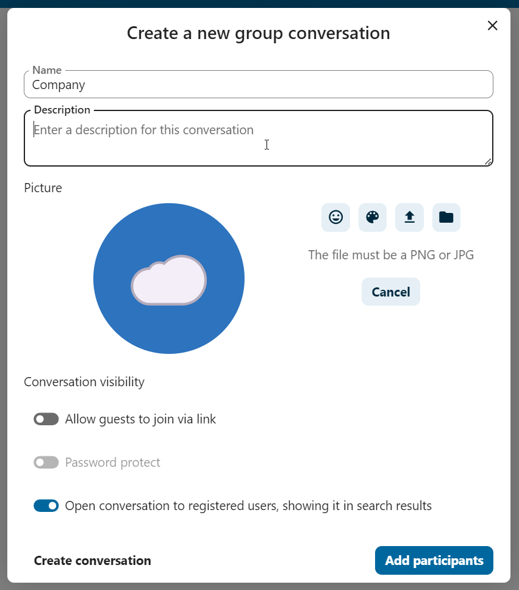
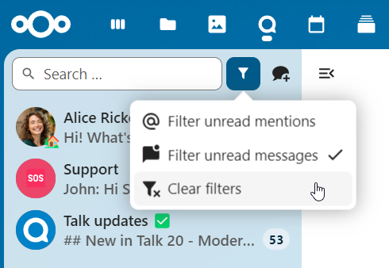
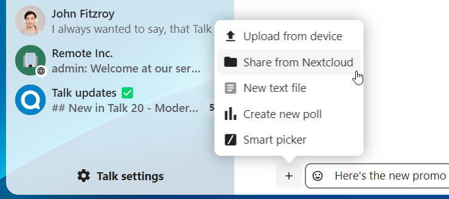
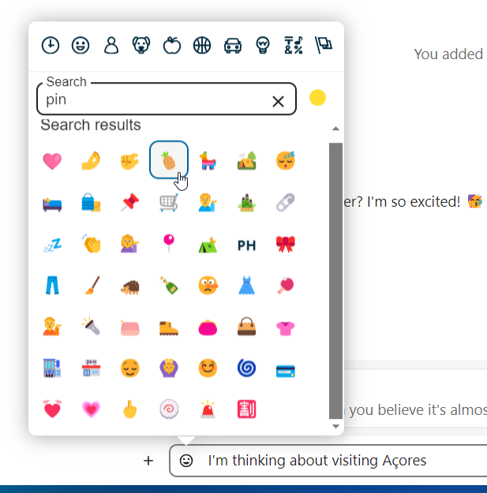
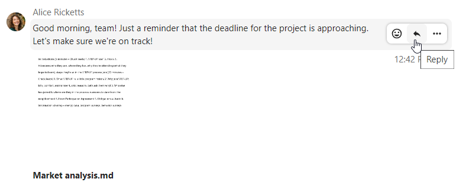
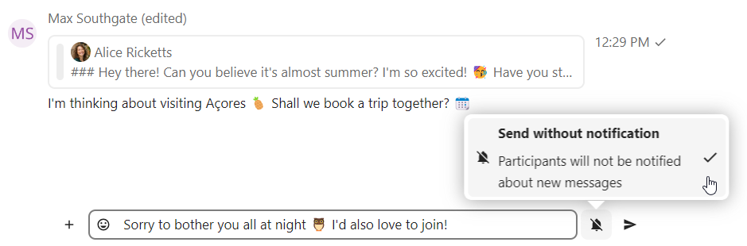
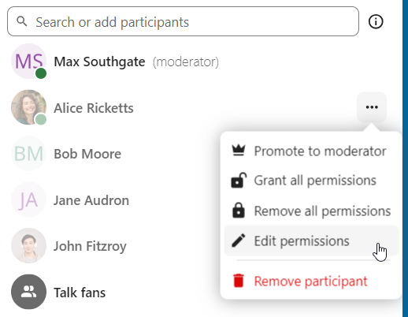
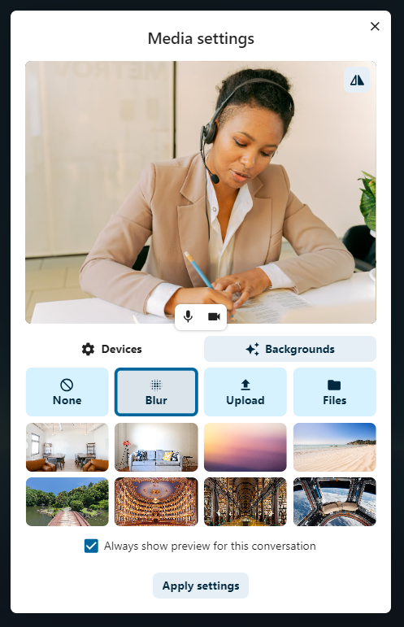
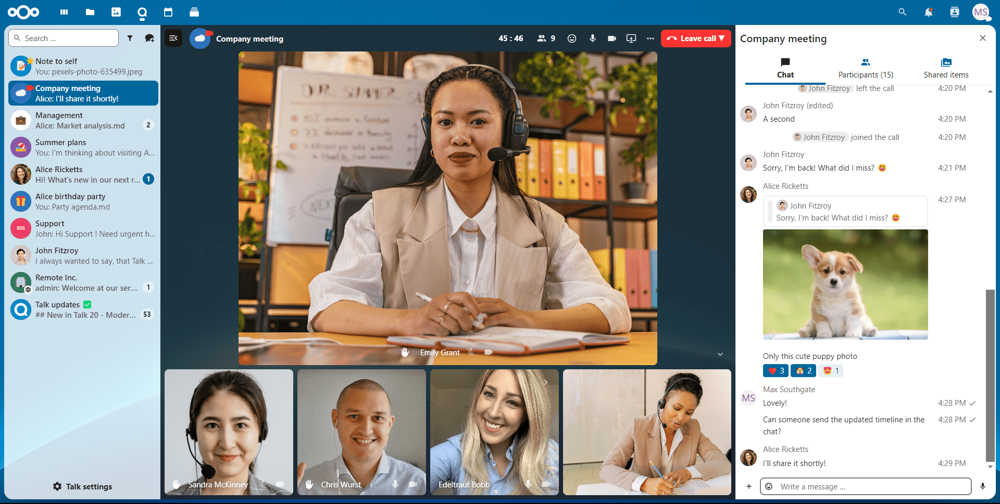

Základy Nextcloud Talk
Nextcloud Talk vám umožňuje chatovat a mít videohovory na svém vlastním serveru.
Chaty a hovory se odehrávají v konverzacích. Těch je možné vytvářet libovolné množství. Konverzace se dělí na dva typy:
Konverzace jednoho s jedním. Toto je kdy máte soukromý chat nebo hovor s jiným uživatelem Talk. Do této konverzace není možné přidávat další osoby ani ji sdílet prostřednictvím odkazu. Tento přímý typ konverzace je možné zahájit vyhledáním druhého uživatele v liště hledání a poté kliknutím na jeho jméno.
Skupinové konverzace. Společně s osobou, která konverzaci vytvořila, může ve skupinové konverzaci být ještě libovolný počet dalších lidí. Skupinovou konverzaci je možné veřejně sdílet prostřednictvím odkazu a tak se k hovoru mohou připojit i externí hosté. Může být také zařazena na seznam, takže ostatní lidé z vámi využívaného Nextcloud serveru se mohou připojit ke konverzaci.
Vytvoření chatu
You can create a direct, one-on-one chat by searching for the name of a user, a group or a team and clicking it. For a single user, a conversation is immediately created and you can start your chat. For a group or circle you get to pick a name and settings before you create the conversation and add the participants.

If you want to create a custom group conversation, click the button next to the search field and filters button and then on Create a new conversation.
{kind=link}
Pokud pak chcete vybrat název pro konverzaci, zadejte popis a nastavte zástupný obrázek (pomocí nahraného obrázku nebo emotikony) a vyberte zda má být konverzace otevřená externím uživatelům a zda ji uvidí ostatní uživatelé na serveru a budou se do ní moci připojit.
{kind=link}
Ve druhém kroku přidáte účastníky a dokončíte vytvoření konverzace.

After confirmation you will be redirected to the new conversation and can start communicating right away.

Zobrazení veškerých otevřených konverzací
You can view all the conversations that you can join by clicking the button next to the search field and filters button and then on Join open conversations.

Filtrování vašich konverzací
Své konverzace můžete filtrovat pomocí tlačítka filtru nacházejícího se vedle kolonky pro hledání. Filtrovat je možné dvěma možnostmi: 1. Filtrovat nepřečtená zmínění: Tato volba umožňuje zobrazit skupinové konverzace, ve kterých máte nepřečtená zmínění vás nebo nepřečtené konverzace jeden-na-jednoho. 2. Filtrovat nepřečtené zprávy: Tato volba umožňuje zobrazit veškeré nepřečtené zprávy ve všech konverzacích, ve kterých jste zapojeni.

Filtr je možné vyčistit z nabídky filtrů.
{kind=link}
Sdílení souborů v chatu
Soubory je možné sdílet v chatu třemi způsoby.
Zaprvé je jednoduše můžete přetáhnout na chat.

Zadruhé soubor můžete vybrat z Nextcloud Soubory nebo správce souborů tlačítkem s malou kancelářskou sponkou a vybráním odkud chcete soubor zvolit.
{kind=link}

You can add more files until you are done and decide to share the files. You can also add a text caption to your shared files, providing a brief description or context.

Všichni účastníci si budou moci kliknutím na soubory je zobrazit, upravit nebo stáhnout – bez ohledu na to, zda mají uživatelský účet. Těm, kteří ho mají, bude soubor automaticky nasdílen, externí hosté je obdrží jako sdílení veřejným odkazem.

Vkládání emotikon
Emotikony je možné přidávat pomocí výběru vlevo od kolonky pro zadávání textu.
{kind=link}
Editing messages
You can edit messages and captions to file shares up to 6 hours after sending.

Using Markdown
You can enhance your messages with a markdown syntax support. See list for usage:
Headings and dividers
# Heading 1
## Heading 2
### Heading 3
#### Heading 4
##### Heading 5
###### Heading 6
Heading
===
Normal text
***
Normal text
Inline decorations
**bold text** __bold text__
*italicized text* _italicized text_
`inline code` ``inline code``
```
.code-block {
display: pre;
}
```
Lists
1. Ordered list
2. Ordered list
* Unordered list
- Unordered list
+ Unordered list
Quotes
> blockquote
second line of blockquote
Task lists
- [ ] task to be done
- [x] completed task
Tables
Column A | Column B
-- | --
Data A | Data B
Setting reminder on messages
You can set reminders on specific messages. If there’s an important message you want to be notified about later, simply hover over it and click on the reminder icon.

In the submenu, you can select an appropriate time to receive a notification later.

Odpovídání na zprávy a další
Na zprávu je možné odpovědět pomocí šipky, která se objeví, když ukazatelem myši najedete na zprávu.
{kind=link}
V nabídce … je možné také zvolit soukromou odpověď. Toto otevře chat jednoho s jedním.
{kind=link}
Je zde také možné vytvořit přímý odkaz na zprávu nebo ji označit jako nepřečtenou, abyste se k ní při přístím vstupu do chatu vrátili. Pokud se jedná o soubor, můžete si ho zobrazit v Souborech.
Silent messages
If you don’t want to disturb anyone in the middle of the night, there is a silent mode for chatting. While it is enabled, other participants will not receive notifications from your messages.
{kind=link}
Správa konverzace
Ve vámi založených nových konverzacích jste vždy moderátory. V seznamu účastníků je možné udělit ostatním účastníkům takové oprávnění prostřednictvím nabídky … vpravo od jejich jména, přiřazovat jim uživatelsky určená oprávnění nebo je odebrat z konverzace.
Změna oprávnění uživatelů, kteří se přidali do veřejné konverzace, je také do ní natrvalo přidá.
{kind=link}
Moderátoři mohou nastavovat konverzaci. Dostanete se k nim výběrem Nastavení konverzace z nabídky … konverzace nahoře.

Zde je možné nastavit popis, přístup hostům, zda je konverzace viditelná ostatním na serveru a další.

Messages expiration
A moderator can configure message expiration under the Conversation settings within the Moderation section. Once a message reaches its expiration time, it is automatically removed from the conversation.
The available expiration durations are 1 hour, 8 hours, 1 day, 1 week, 4 weeks, or never (which is the default setting).

Zahájení hovoru
Když se nacházíte v konverzaci, můžete kdykoli zahájit hovor tlačítkem Zahájit hovor. Ostatní účastníci budou upozorněni a mohou se k hovoru připojit. Ostatní účastníci obdrží upozornění a mohou se připojit k hovoru.

Pokud hovor začal už někdo jiný, tlačítko se změní v zelené Připojit se k hovoru.
{kind=link}
V průběhu hovoru můžete ztlumit svůj mikrofon a vypnout přenos obrazu z vaší kamery pomocí tlačítek na pravé straně horní lišty, nebo pomocí zkratek M pro ztlumení zvuku a V` pro videa. Při ztlumení (a naopak) je také možné použít mezerník. Když jste ztlumení, stisknutí a držení mezerníku to zruší, takže můžete mluvit, dokud ho držíte. Pokud nejste ztlumení, stisknutí mezerníku vás ztlumí, dokud ho neuvolníte.
Přenos obrazu z vaší kamery je možné skrýt (užitečné při sdílení obrazovky) pomocí drobné šipky nad proudem videa. Nazpět opět pomocí této šipky.
K nastavením se dostanete z nabídky … v horní liště, kde je možné zvolit jinou webovou kameru, mikrofon a další.

From media settings dialog, you can also change the background of your video.
{kind=link}
Ostatní nastavení je možné změnit v dialogu Nastavení pro Talk.

Zahájení sdílení obrazovky
You can click the monitor icon on your video stream to share your screen. Depending on your browser, you will get the option to share a monitor, an application window or a single browser tab. If video from your camera is also available, other participants will see it in a small presenter view next to the screen share.

Změna pohledu v hovoru
Zobrazení je možné během hovoru přepínat mezi tím s někým vyzdviženým a zobrazením v mřížce a to prostřednictvím malé ikony čtyř bloků vpravo nahoře. V mřížce jsou všichni ve stejné velikosti a pokud se někteří nevejdou na obrazovku, objeví se vlevo a vpravo tlačítka, pomocí kterých je možné se mezi nimi přesouvat.

Vyzdvižené zobrazení ukazuje řečníka většího a ostatní v řádku pod ním. Pokud se lidé nevejdou na obrazovku, vlevo a vpravo se objeví tlačítka, kterými se mezi nimi můžete přesouvat.
{kind=link}